In this Quick Start Guide you will find all required information on how to install the theme and bundled plugins, troubleshoot most common issues and make your site look like the theme demo.
The7 comes with complimentary support. So when all else fails, please do not hesitate to submit a support request via our online Help-Desk. Our support policy is available on this page.
If you want someone to help you with theme customization, or even build your entire website, our Custom Shop is there at your service.
We hope you will enjoy working with The7.
Yours sincerely, Dream-Theme.
Before Getting Started
Due to the amount of features, settings and options available in The7, at first you may find it to be a bit overwhelming (compared to a usual "blog" theme).
For super-easy adaptation, we recommend using Theme Options Wizard and avoid advanced settings. Very soon you will get the idea behind the theme architecture and will be able to use The7 to its full potential.
Also note, that this Quick Start Guide does not cover basic WordPress usage. If you are a WordPress newbie, please get accustomed with it before proceeding with this manual and the theme!
Here are some links that will help you to become more confident with WordPress:
Seriously. If you do not want to spoil your experience with any WordPress theme, get accustomed with WordPress basics first! :)
Theme Installation
Before proceeding, please make sure that following plugins are not installed or deactivated:
WP-pagenavi;
WP-less;
Options Framework;
any plugin that uses tgmpa (TGM Plugin Activation) and lessc (lessPHP) classes.
If you've downloaded and unzipped the full theme package, locate the theme installation file called "dt-the7_v.X.X.X.zip" (where "X.X.X" is the theme version).
Alternatively you can download the installable WordPress file from "Downloads" tab of your ThemeForest account (fig. 1):
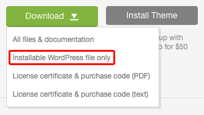
Fig. 1 - Downloading installable file.
Don't forget to download the "License certificate & purchase code" file. You will need the purchase code later to activate the theme.
Use the "Upload" button to upload the installable "dt-the7_v.X.X.X.zip" file, that you have previously downloaded to your computer (fig. 2.2):
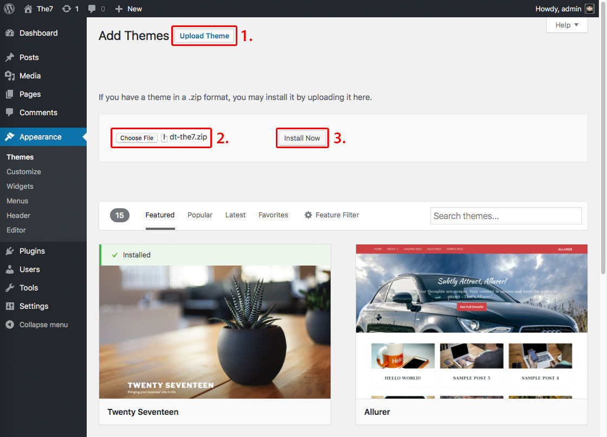
Fig. 2.2 - Uploading theme.
Follow the instructions below to activate the theme.
If you were not able to install the theme this way, most probably your server has upload file size limit. The theme installable .zip file is too large to be uploaded via WordPress admin area. You can contact your hosting provider and ask to ease this limit (e.g 16 MB will do).
Alternatively you can read on to learn how to install the theme manually.
Uploading theme via cPanel
If your host offers the cPanel control panel, follow these instructions:
In cPanel File Manager, navigate to your "themes" folder. If your WordPress is installed in the document root folder of your web server you would navigate to "public_html/wp-content/themes" and if you have WordPress installed in a sub-folder called "wordpress", you would navigate to "public_html/wordpress/wp-content/themes".
Once you've navigated to the "themes" folder in cPanel File Manager, click on Upload file(s) and upload the installable .zip file.
Once the .zip file is uploaded, click on it in cPanel, then in the panel to the right, click on "Extract File Contents", and that .zip file will be uncompressed.
Follow the instructions below to activate the theme.
Uploading theme via FTP
To add a theme via FTP, follow these basic steps:
Unzip the installable file. You need to preserve the directory structure in the archive when unzipping it.
Using an FTP client to access your host web server, upload the theme folder ("dt-the7") via FTP into "wp-content/themes/" folder.
Follow the instructions below to activate the theme.
Activate the theme
To activate The7:
Navigate to Appearance > Themes.
From the Themes panel, move the cursor over The7 thumbnail image to see actions available for it:
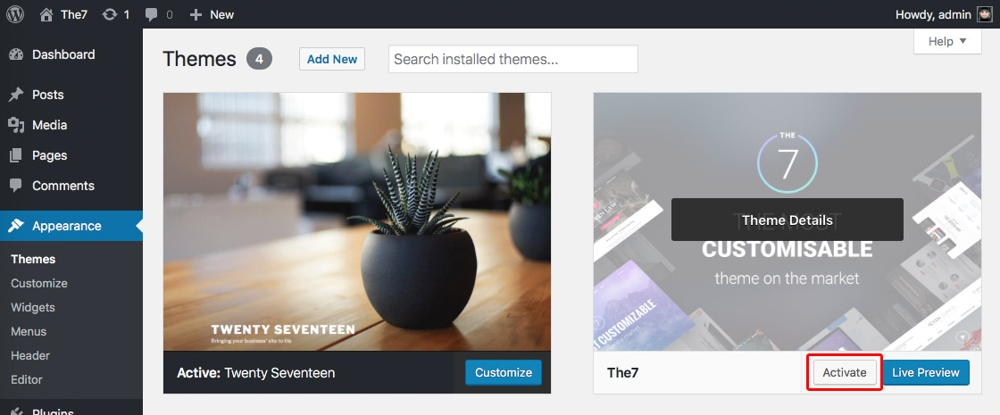
Fig. 3 - Activating The7.
You can view more information about any theme by clicking the "Theme Details".
A live preview of The7 theme (using your website's content) can be seen by clicking the "Live Preview".
Attention! If the theme preview is blank, do not activate The7! Please refer to this section of Quick Start Guide to resolve the issue. Otherwise, your site will not be displayed correctly.
To activate the theme click the "Activate" button.
Troubleshooting
Cannot upload the theme
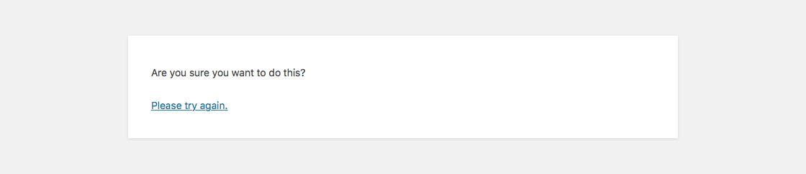
Fig. 4 - Cannot upload the theme.
If you were not able to install the theme via "Appearance > Themes" interface (see fig. 4 above), most probably your server has upload file size limit. The theme installable .zip file is too large to be uploaded via WordPress admin area. You can contact your hosting provider and ask to ease this limit (e.g 16 MB will do) or install the theme manually.
Missing the style.css stylesheet
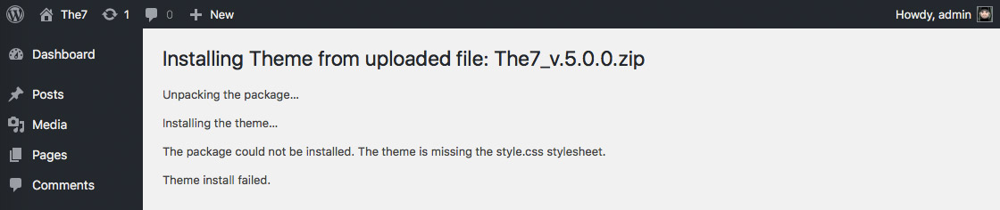
Fig. 5 - Theme is missing the style.css stylesheet.
A common issue that can occur with users new to installing WordPress themes is a "Broken theme and/or stylesheets missing" error message being displayed when trying to upload or activate the theme. This error message does not mean that the theme is broken, it simply means that you are uploading the wrong file.
Please make sure that file you are uploading the installable file. It is called something like "dt-the7_v.X.X.X.zip". Please refer to this section of guide for details.
Blank page / allowed memory size error after The7 activation
Blank page on theme preview or after theme activation, in most cases, is the indication of the so-called memory limit issue. It's the same issue when you're getting the "Allowed memory size of xxxxxxxx bytes exhausted" error. Here's how to solve it:
First and foremost, try to edit the "wp-config.php" file in the root of you WordPress installation. Search for 'WP_MEMORY_LIMIT'. If there is such setting, set the limit to '256MB'. If there's no such setting, add this bit of code before the MySQL settings define( 'WP_MEMORY_LIMIT', '256M' );. Also make sure there's no 'WP_MAX_MEMORY_LIMIT' setting in "wp-config.php" file; or make sure it is not less then '256MB'.
Second, if editing "wp-config.php" did not help, try to add this bit of code in the beginning of ".htaccess" file: php_value memory_limit 256M.
Third, if you get the error even after completing both steps above, it may be that your PHP is configured in CGI or suPHP. In this case instead of ".htaccess", you should create a file called "php.ini" and place this bit of code in it: memory_limit = 256M.
If above steps did not yield any result, please don't hesitate to contact your hosting company support department. Since this is most likely a server-related problem, we will not be able to help you.
Failed to create customization .CSS file
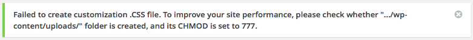
Fig. 6 - CHMOD issue.
Theme will work fine on the vast majority of correctly installed and configured WordPress sites without any additional setup. However on some (very rear) hosting configurations you can notice that images on your site are not uploading/displaying or theme returns notifications about setting certain CHMOD rules on "uploads" folder (see fig. 6 above). If you are experiencing this issue, please follow these steps to fix it:
Make sure that theme installed strictly to "your_site/wp-content/themes/" folder.
The folder "your_site/wp-content/uploads" must be created. On some servers you'll need to set its CHMOD to 755, on others – to 777.
Please check the upload path is set to default (in Settings > Media or in wp-config.php).
If above steps did not yield any result, please don't hesitate to contact your hosting company support department. Since this is most likely a server-related problem, we will not be able to help you.
404 error on some pages
After theme activation, on some pages you can encounter the "404 Page not found" error. This is a simple one. In WordPress admin area, navigate to Settings > Permalinks and click the "Save Changes" button. This will update the ".htaccess" file to work with custom post types of The7 correctly.
Theme Registration
Immediately after theme activation you will be redirected to My The7 page (fig. 7.1):
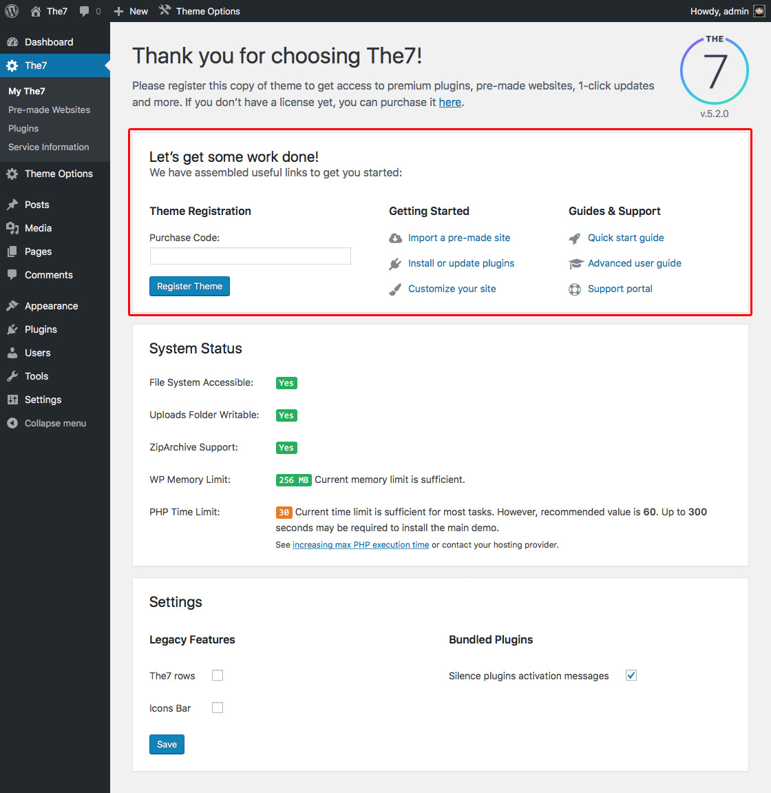
Fig. 7.1 - My The7 page and theme registration.
Pay attention to the "System Status" block and check if there are any critical issues with your WordPress instance. In case a critical issue is detected, The7 will display a suggestion on resolving it.
Use your purchase code to register the theme and get access to pre-made websites, premium plugins, one-click updates and more.
Note that in case you want to use your purchase code on other domain name (e.g. when you are moving a site from one domain to another) you'll need to de-register the theme first (fig. 7.2):
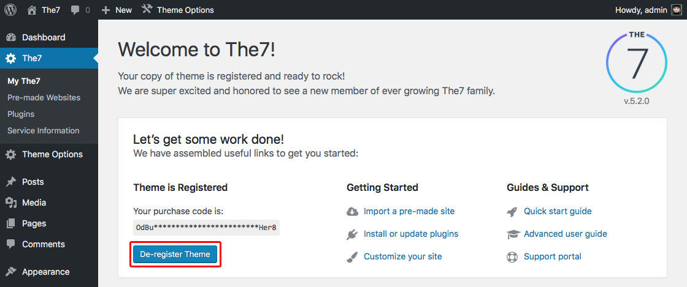
Fig. 7.2 - Theme de-registration.
Also note that running multiple websites on a single license is a copyright violation. In other words it is a serious legal offence and is strictly prohibited. Remember 1 site = 1 purchased license.
Pre-made Websites
You can import pre-made websites (also called "demo websites", "demo content" or just "demos") via The7 > Pre-made Websites interface. If you have not installed bundled plugins yet, you'll see a list of required plugins on the right of websites thumbnails. Click the "install" link on order to automatically install and activate required plugins (fig. 8.1):
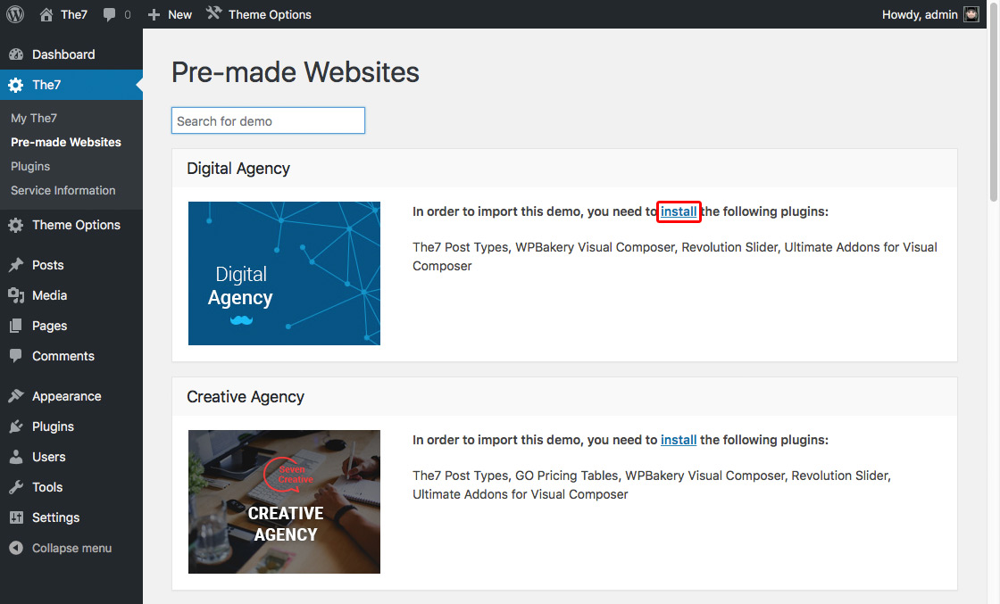
Fig. 8.1 - Required plugins.
Once required plugins are installed, you will be presented with a list of website import options (see fig. 8.2), which includes:
website content;
theme options (website design);
file attachments (images or image placeholders);
sliders.
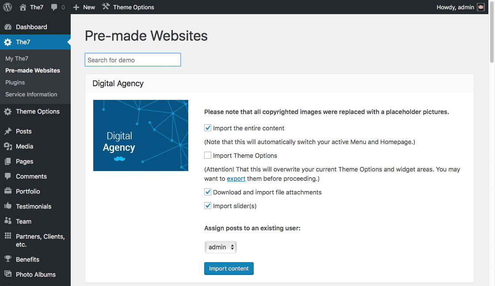
Fig. 8.2 - Website import options.
Note that after pre-made website import, you will need to re-save Visual Composer design options under Visual Composer > Design Options
Plugins
In case you have not installed plugins automatically, you can do it in The7 > Plugins interface. The same interface allows you to update plugins (fig. 9):
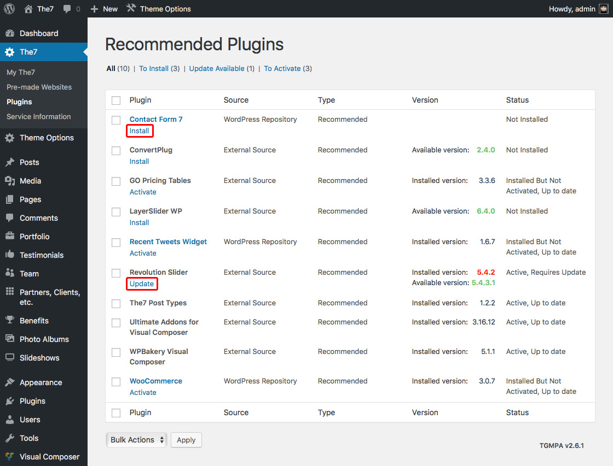
Fig. 9 - Plugins installation and update.
After installing the plugin, please don't forget to "Activate" it.
Bulk plugins installation / activation / update actions are also available. However note that this feature may not work correctly on some servers.
The7 is designed to work best with Visual Composer plugin. Though it is not required, we strongly recommend you to install and activate it. Otherwise you will not be able to take advantage of all The7 features.
Other recommended plugins are:
The7 Elements to enable post types and corresponding shortcodes like Portfolio, Albums etc. (don't forget to save your premalinks structure in Settings > Permalinks after activating this plugin);
Ultimate Addons to enhance Visual Composer even further;
Slider Revolution for sliders, slideshows, animated hero-images, etc.;
WooCommerce if you're building a web shop.
Theme Options Wizard
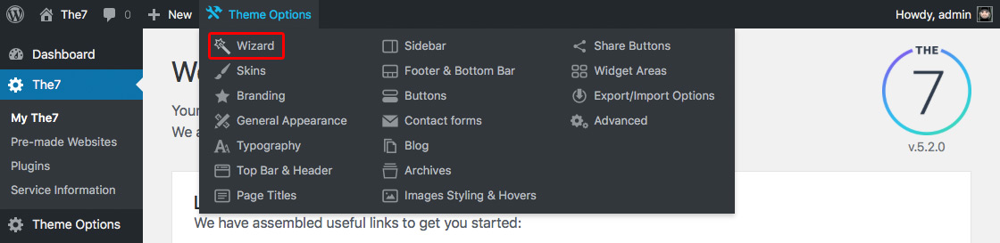
Fig. 10 - Theme Options Wizard.
The7 has the highest amount of settings to customize your website appearance in the entire industry up to date! Therefore, number of advanced settings in Theme Options can be a bit overwhelming at first. Especially if you have no experience with "multipurpose" WordPress themes.
Do not worry, we have your back cowered from first seconds of using The7 theme. You do not have to mess with all the settings to design your site. Simply use the Theme Options > Wizard interface!
Theme Options Wizard allows you to set up basic settings of site appearance, mobile and desktop headers, branding, sidebar, footer, background and text colors, etc. The Wizard will do the rest, intelligently calculating all other settings, so you can have your site professionally designed in mere minutes!
When Wizard will do its work, if you wish, you can fine-tune every aspect of your site design in the corresponding section(s) of Theme Options.
What's Next?
Once you've read this Quick Start Guide, installed the theme and made yourself somewhat accustomed with it, you may want to read the full user guide available online. Though we hope (and believe), you'll rarely need it.
If you feel that you cannot resolve the issue yourself or need to ask something about theme feature(s), please do not hesitate to submit a support request via our online Help-Desk. (Make sure that you've read our support policy on this page.)
If you want someone to help you with theme customization, or even build your entire website, our Custom Shop is there at your service.
And, of course, you can grab another copy of The7 for your upcoming projects here on ThemeForest.
We hope you will enjoy working with The7 and it will be a great help in all your endeavors online!
Yours sincerely, Dream-Theme.